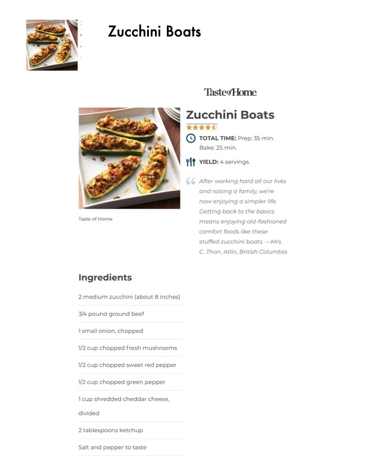

Zucchini Boats

Original cookbook page 209
Stuffed zucchini boats filled with ground beef, vegetables, and cheese. Recipe from Mrs. C. Thon, Atlin, British Columbia.
Prep: 35 minutes • Cook: 25-30 minutes • Total: 60-65 minutes
Ingredients
- 2 medium zucchini (about 8 inches)
- 3/4 pound ground beef
- 1 small onion, chopped
- 1/2 cup chopped fresh mushrooms
- 1/2 cup chopped sweet red pepper
- 1/2 cup chopped green pepper
- 1 cup shredded cheddar cheese, divided
- 2 tablespoons ketchup
- Salt and pepper to taste
Instructions
- Trim the ends off zucchini. Cut zucchini in half lengthwise; scoop out pulp, leaving 1/2-in. shells. Finely chop pulp.
- In a skillet, cook beef, zucchini pulp, onion, mushrooms and peppers over medium heat until meat is no longer pink; drain. Remove from the heat. Add 1/2 cup cheese, ketchup, salt and pepper; mix well. Spoon into the zucchini shells. Place in a greased 13x9-in. baking dish. Sprinkle with remaining cheese.
- Bake, uncovered, at 350° until zucchini is tender, 25-30 minutes.
📝 Recipe Notes
Recipe rated approximately 4.5 stars. From Taste of Home. © 2021 RDA Enthusiast Brands, LLC
Recipe #209 from collection